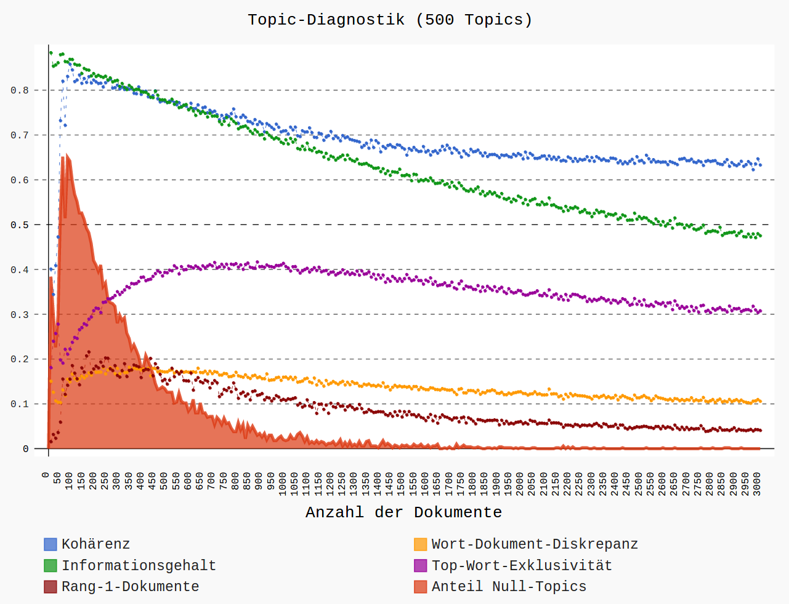

Topic Modeling
Ulrike Henny-Krahmer
(CLiGS, University of Würzburg, Germany)
Workshop "Digital tools for the analysis of literary texts"
Verona, 23 & 24 October, 2017
Slides at: https://hennyu.github.io/verona_17


Sessions on Topic Modeling
- Monday
- 14-15.30: An Introduction
- 15.45-17: Corpus Preparation
- Tuesday
- 09.30-11: Using MALLET and tmw
- 11.30-13: Post Processing, Visualization and Interpretation of Results
Topic Modeling: An Introduction
Topic Modeling: An Introduction
- What is Topic Modeling and how does it work?
- Application fields
1. What is Topic Modeling and how does it work?
What is Topic Modeling?
"Topic modeling is complicated and potentially messy but useful and even fun. The best way to understand how it works is to try it."(Megan R. Brett, "Topic Modeling: A Basic Introduction")
What is Topic Modeling?
- Topic Modeling is a quantitative method in text analysis
- distributions of words are detected statistically in a corpus of documents
- Topic Modeling is especially useful for large collections of texts
The goal of Topic Modeling is...
...to detect hidden semantic structures.
How does it work?
Basic idea from Distributional Semantics:
"a word is characterized by the company it keeps"(John Firth, 1957)
How does it work?
- Topic Modeling identifies automatically recurring themes, motives, discourses
- important: without explicit semantic knowledge!
Where does it come from?
- Topic Modeling has primarilly been developed empirically
- originally developed for Information Retrieval (search for subject-matters)
- current method, widely-used: LDA (Latent Dirichlet Allocation), 2003
How does it work?
basic idea
- discovers words that occur together again and again, that is, words that occur in similar contexts ⇒ Topics
- calculates how important each topic is in each document
How does it work?
a little bit more technically
- a topic is a distribution of probabilities of words
- a document is a distribution of probabilities of topics
Words, Topics, Documents

Generative, iterative
generative
- at the heart of the technique is a generative model
- how could the documents have come into being?
iterative
for each __document__ in the collection:
choose a topic distribution
for each __word__ in the document:
choose a topic, to which the word belongs
choose a word from the topic
repeat the whole process!
Generative, iterative

Generative, iterative

And this is how it works exactly:

And this is how it works exactly...
Terms and concepts
The process might be a black box.
But the results are not.
And what we put into the process, neither!
word, topic, document have a special meaning in topic modeling
Terms and concepts
words
- tokens
- sentences are splitted by tokenization
- tokens are not always words
- "Topic Modeling" can also be a token
Terms and concepts
documents
- not: sequences of words and punctuation marks
- but: a collection of word counts
- e.g. ["to" : 2, "be" : 2, "or" : 1, "not" : 1]
Terms and concepts
corpus
- a collection of documents
Terms and concepts
topics
- in the underlying model, they are at first not what a text, discourse, conversation is about
- technically: a probability distribution over a word vocabulary
important: before we start topic modeling, we decide ourselves what a word and a document is!
How can topics be understood?
- themes of texts
- elements of discourse
- literary motives
- ... ?
How can topics be understood?
examples from Spanish American novels"school"
How can topics be understood?
examples from Spanish American novels"travel"

How can topics be understood?
examples from Spanish American novels"business"
How can topics be understood?
examples from Spanish American novels"French intervention in Mexico (1861-1867)"
How can topics be understood?
examples from Spanish American novels"description of landscape"

How can topics be understood?
examples from Spanish American novels"somewhere in Argentina?"
How can topics be understood?
alternative visualization for words in topics

How can topics be understood?
visualization for topics in documents
Roberto Payró, El falso Inca (Argentina, 1905)
How can topics be understood?
The Starry Night (Anne Sexton), in a Topic Model by Lisa Rhody (2012)
2. Application fields
Application scenarios
- Information Retrieval: search not for single terms, but for themes / semantic fields
- Recommender Systems: suggestion of semantically similar research articles
- Exploration of text collections
- Questions from literary and cultural history
Exploratory visualization
Example: Signs at 40 (grid)

Exploratory visualization
Example: Signs at 40 (over time)
Research contributions
- Cameron Blevins: "Topic Modeling Martha Ballard's Diary" (2010): diary, over time
- Ted Underwood und Andrew Goldstone (2012): "What can topic models of PMLA teach us...": history of disciplines
- Lisa Rhody, "Topic Modeling and Figurative Language" (2012): poetry, Ekphrasis
- Matthew Jockers, Macroanalysis (2013): novel, nationality, gender
- Ben Schmidt: "Typical TV episodes" (2014): TV series, over time
- Christof Schöch, "Topic Modeling Genre" (2017): drama, subgenres
Example analysis: Prototype Theory and Subgenres of the Spanish American Novel
Literary genres as classes, as prototypes, as families
Prototype Theory and Subgenres of the Spanish American Novel
Corpus
Prototype Theory and Subgenres of the Spanish American Novel
Example topic
Prototype Theory and Subgenres of the Spanish American Novel
Topic-based distances to prototypes
Prototype Theory and Subgenres of the Spanish American Novel
Topic-based distances between all novels
Topic Modeling: Corpus Preparation
Topic Modeling: Corpus Preparation
- needed: Texts
- Text selection
- Metadata
- Natural Language Processing
needed: Texts
- for Topic Modeling, full texts are needed
- many texts are needed
- metadata are useful
needed: Texts
How about questions of variation and normalization?
How well do I need to know the texts from close reading?
⇒ What is the research question?
Text selection
- What kind of texts?
- How many texts?
- How long should or can they be?
What kind of texts?
To consider:
- a topic model is primarily a model of a text collection
- it is possible that a topic does not relate to a single text anymore
What kind of texts?
Example: Ciro B. Ceballos, Un adulterio, 1901, short novel, Mexico
topics in the document
What kind of texts?
Example: Ciro B. Ceballos, Un adulterio, 1901, short novel, Mexico
topic 31: vida - campo - estancia (life - countryside - ranch)
What kind of texts?
Example: Ciro B. Ceballos, Un adulterio, 1901, short novel, Mexico
| word | weight in the topic | number of occurrences in the text |
|---|---|---|
| vida (life) | 193 | 20 |
| campo (countryside/field) | 179 | 5 |
| estancia (ranch) | 152 | 1 |
| año (year) | 151 | 5 |
| amigo (friend) | 137 | 11 |
| mate (mate tea) | 129 | 0 |
| cuero (leather) | 109 | 0 |
| sargento (sargent) | 86 | 0 |
| pata (paw) | 84 | 0 |
| cuchillo (knife) | 76 | 0 |
topic 31: vida - campo - estancia (life - countryside - ranch)
What kind of texts?
reconsider:
"somewhere in Argentina?"
What kind of texts?
- the importance of comparability (language, genre, epoch, authors)
- the issue of availability
How many texts?
How many texts?
How long should or can they be?
ideal: similar length
How long should or can they be?
Example: corpus of German long fiction
{kind=link}
{kind=link}
How long should or can they be?
Example: Grenzboten corpus
{kind=link}
{kind=link}
How long should or can they be?
no definite answers yet
workarounds:
- segmentation of texts
- (combination of texts)
Exercise: text segmentation
what we need:
- Python is installed
- a working directory, containing a text corpus
- a copy of tmw
- the notebook "Run_Prepare.ipynb"
Metadata
- For example: author, title, publication year, gender of the author, subgenre of the text, literary movement, narrative perspective, etc.
- Common format: CSV (comma-separated values)
Metadata
Example

Natural Language Processing
text as linguistic code
the basis for
- text mining
- topic modeling!
- distant reading
Natural Language Processing
- tokenization
- lemmatization
- part-of-speech tagging
- stopword lists
Part-of-speech tagging
Example: TreeTagger
Stopwords
- words that should be removed before processing the text further
- very frequent words, which render results less meaningful
- for example:
- function words like articles, conjunctions, prepositions
- nouns which are semantically not specific (e.g. "thing")
- proper names (for example in novels)
Stopword lists
- often part of text mining or NLP software
- general lists for individual languages
- or generated for a specific corpus
- e.g. the most frequent words
- all function words
- all proper names
- ...
Stopword lists
also important for Topic Modeling!
Exercise: create a stop word list
what we need:
- Python is installed
- a working directory, containing a text corpus
- a copy of tmw
- the notebook "Run_Prepare.ipynb"
Topic Modeling: Using MALLET and tmw
Topic Modeling: Using MALLET and tmw
- Workflow (overview)
- Tools (overview)
- MALLET
- tmw
Overview of the workflow

(Mallet und Python; see http://github.com/cligs/tmw.)
Implementation: MALLET and Python
- MALLET (Machine Learning for Language Toolkit, https://github.com/mimno/Mallet): the actual Topic Modeling
- Python (Programming language, https://www.python.org/): everything else (tmw)
Overview of tools
| Name | Developer | Language | Link | ||
|---|---|---|---|---|---|
| MALLET | machine learning for language toolkit |  |
Andrew McCallum et al. | Java | http://mallet.cs.umass.edu/topics.php |
| Gensim | topic modeling for humans | |
Radim Řehůřek | Python | https://radimrehurek.com/gensim |
| tmw | topic modeling workflow |  |
Christof Schöch | Python | https://github.com/cligs/tmw |
| dfr-browser | a simple topic-model browser |  |
Andrew Goldstone | JavaScript | http://agoldst.github.io/dfr-browser/ |
Parameters in the workflow
- preprocessing: length of text segments, lemmatization, feature selection
- modeling: number of topics, number of iterations, mode of optimization
- visualization: calculation of means, normalization of values
Use MALLET
Where we start from:
- MALLET is installed (and we know in which directory!)
- We have a working directory (downloaded materials) with:
- a folder with a text corpus
- a text file with a stop word list
- a folder for the output ("model/")
Call MALLET
Two steps:
- import
- converts all text files into the MALLET corpus format
- considers the stopwords, writes a binary file
- train-topics
- does the actual topic modeling
- writes some output files
MALLET "import"
- tell the computer: use MALLET
- tell MALLET: import the texts, and
- ... where are the text files
- ... where should the imported corpus be saved
- ... how should the texts be tokenized
- ... use stopwords, from a stopwords file
MALLET "import" (Linux)
/home/ulrike/Programme/mallet-2.0.8RC3/bin/mallet
import-dir --input /home/ulrike/Dokumente/GS/Veranstaltungen/2017_Verona/exercises/5_lemmata_N
--output /home/ulrike/Dokumente/GS/Veranstaltungen/2017_Verona/exercises/mallet_model/en_lemmata_N.mallet
--keep-sequence
--token-regex "\p{L}+"
--remove-stopwords TRUE
--stoplist-file /home/ulrike/Dokumente/GS/Veranstaltungen/2017_Verona/exercises/en_stopwords.txt
MALLET "import" (Windows)
(using the cmd Terminal; from C:\Programs\mallet\)
bin\mallet
import-dir
--input C:\Users\[USER]\Desktop\2017_Verona\exercises\5_lemmata_N
--output C:\Users\[USER]\Desktop\2017_Verona\exercises\mallet_model\en_lemmata_N.mallet
--keep-sequence
--remove-stopwords TRUE
--stoplist-file C:\Users\[USER]\Desktop\2017_Verona\exercises\en_stopwords.txt
MALLET "train-topics": create the topic model
- tell the computer: use MALLET
- tell MALLET: model (train-topics), and:
- ... where the corpus file is (--input)
- ... how many topics there are (--num-topics)
- ... how often to optimize intervals (--optimize-interval)
- ... how many words to show (--num-topic-words)
- ... path to the "words-with-topics" (--output-topic-keys)
- ... path to the "topics-per-document" (--output-doc-topics)
- ... path to "words-by-topics" (--topic-word-weights-file)
MALLET "train-topics" (Linux)
/home/ulrike/Programme/mallet-2.0.8RC3/bin/mallet train-topics
--input /home/ulrike/Dokumente/GS/Veranstaltungen/2017_Verona/exercises/mallet_model/en_lemmata_N.mallet
--num-topics 30
--optimize-interval 50
--num-iterations 500
--num-top-words 30
--output-topic-keys /home/ulrike/Dokumente/GS/Veranstaltungen/2017_Verona/exercises/mallet_model/topics-with-words.txt
--output-doc-topics /home/ulrike/Dokumente/GS/Veranstaltungen/2017_Verona/exercises/mallet_model/topics-in-texts.txt
--topic-word-weights-file /home/ulrike/Dokumente/GS/Veranstaltungen/2017_Verona/exercises/mallet_model/word-weights.txt
MALLET "train-topics" (Windows)
bin\mallet
train-topics
--input C:\Users\[USER]\Desktop\2017_Verona\exercises\mallet_model\en.mallet
--num-topics 30
--optimize-inteval 50
--num-iterations 500
--num-top-words 20
--output-topic-keys C:\Users\[USER]\Desktop\2017_Verona\mallet_model\topics-with-words.txt
--output-doc-topics C:\Users\[USER]\Desktop\2017_Verona\mallet_model\topics-in-texts.txt
--topic-word-weights-file C:\Users\[USER]\Desktop\2017_Verona\mallet_model\word-weights.txt
Look at the results
- Open the different files that represent the model and look at them
- Tools to use: gedit or Notepad++ (or Calc/Excel, if necessary, rename the files so that they end with ".csv")
tmw
tmw has models for:
- preprocessing
- the topic modeling itself
(it calls MALLET) - postprocessing
- visualization
tmw on GitHub:
https://github.com/cligs/tmw/tree/next
Topic Modeling: Post Processing, Visualization and Interpretation of Results
Overview of the workflow
(Mallet und Python; see http://github.com/cligs/tmw.)
Post Processing
after the topic modeling:
- aggregation of results with metadata
- visualization
- interpretation
- evaluation
Visualization options in tmw
by example (30 portuguese novels)
Wordclouds (make_wordle_from_mallet)
Top Topics, absolute (plot_topTopics)
for the author Camilo Castelo Branco
Top Topics, normalized (plot_topTopics)
for the author Camilo Castelo Branco

Top Items (plot_topItems)
by subgenre

Top Items (plot_topItems)
by narrative perspective

Heatmap (plot_distinctiveness_heatmap)
distinctive topics for different subgenres
Topic Document Matrix
collection of Portuguese novels
Topic Document Matrix
collection of Spanish novels

tmw extended
Clustering of authors by topic

tmw extended
Topics in the progression of text

Hand-on with tmw
- Post Processing
- Visualize
Conclusions
Discussion, Questions, Comments, Ideas
References
Theory and method
- Blei, D. M. (2012). "Probabilistic topic models". In: Communications of the ACM, 55(4): 77–84. http://www.cs.princeton.edu/~blei/papers/Blei2012.pdf
- Steyvers, M. and Griffiths, T. (2006). "Probabilistic Topic Models". In: Landauer, T. et al. (eds), Latent Semantic Analysis: A Road to Meaning. Laurence Erlbaum.
- Weingart, S. (2012). "Topic Modeling for Humanists: A Guided Tour". In: The Scottbot Irregular. http://www.scottbot.net/HIAL/?p=19113
References
Examples of Topic Modeling analyses
- Blevins, C. (2010). "Topic Modeling Martha Ballard’s Diary". In: Historying. http://historying.org/2010/04/01/topic-modeling-martha-ballards-diary/
- Jockers, M. L. (2013). Macroanalysis - Digital Methods and Literary History. Champaign, IL: University of Illinois Press.
- Rhody, L. M. (2012). "Topic Modeling and Figurative Language". In: Journal of Digital Humanities, 2(1) http://journalofdigitalhumanities.org/2-1/topic-modeling-and-figurative-language-by-lisa-m-rhody/
- Schöch, C. (2016). "Topic Modeling Genre: An Exploration of French Classical and Enlightenment Drama". In: Digital Humanities Quarterly. http://digitalhumanities.org/dhq/
- Underwood, T. and Goldstone, A. (2012)." "What can topic models of PMLA teach us about the history of literary scholarship?" In: The Stone and the Shell. http://tedunderwood.com/2012/12/14/what-can-topic-models-of-pmla-teach-us-about-the-history-of-literary-scholarship/
References
Tools
- dfr-browser: http://agoldst.github.io/dfr-browser/
- Gensim: https://radimrehurek.com/gensim
- MALLET: http://mallet.cs.umass.edu/topics.php
- LDAvis Demo: http://www.kennyshirley.com/LDAvis/
- Serendip: http://vep.cs.wisc.edu/serendip/
- tmw: https://github.com/cligs/tmw
Thank you!
Slides at: https://hennyu.github.io/verona_17
tmw (next): https://github.com/cligs/tmw/tree/next
CLiGS: http://cligs.hypotheses.de/